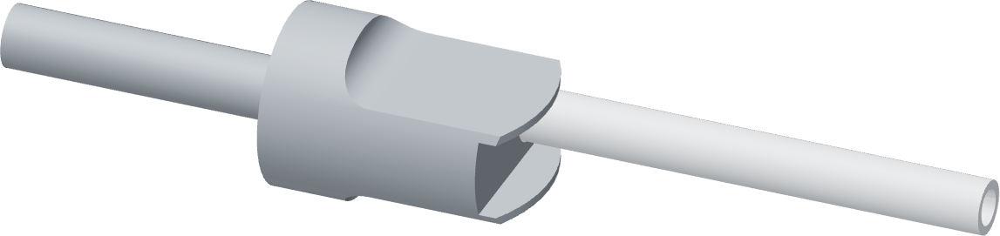

Carry the assembly to the shell
The tube, thimble and faucet lever remain attached to the Touch-Flo. The insertion tooling comes away.

- Follow the matching faucet assembly guide for the tube routing and shell entry.
- Flip the attached faucet lever up to its entry position before inserting the donor into the shell.
- As the donor seats, the shell pushes the faucet lever forward. Once fully seated, the shell prevents that flipped-up position.
- Allow the faucet lever to snap down to its unpressed rest position and check its normal actuation and return.
Finished when
The donor is seated, the tube retains its sleeve and seating witness, and the faucet lever rests down without being pressed.